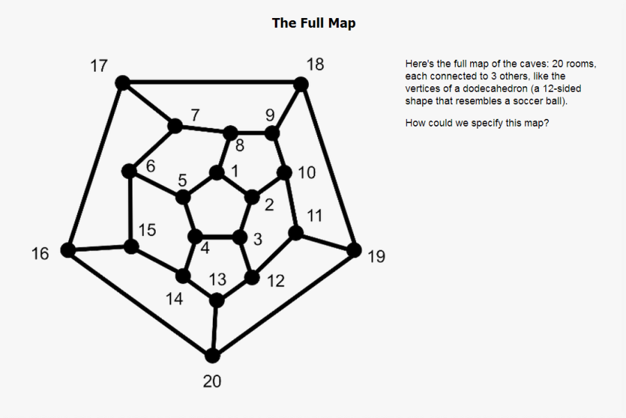

For practice, we'll work with Wumpus, a computer game invented by Gregory Yob in the 1970s.
Notice we don't describe the user interface because our focus is on the behavior of the system.
A portion of the map

You're an explorer in a set of caves, trying to kill the deadly wumpus before it kills you. There are 20 rooms, and each connects to 3 others as corners of a dodecahedron.
The wumpus usually sleeps, but wakes up if you enter his room or shoot an arrow. When he wakes, he is equally likely to move to one of the three adjacent rooms or stay in the one he's in. If he's still in the same room as you after his move, he eats you (and you lose).
There are two other hazards:
You have two abilities:
An arrow can travel 1 to 5 rooms (chosen by you). You specify which rooms you want the arrow to go through and in what order. If you specify a room that can't be reached next, the computer sends the arrow to an adjacent room at random. You start with 5 arrows. If you use up all your arrows or if you shoot yourself, you lose. If an arrow hits the wumpus, you win.